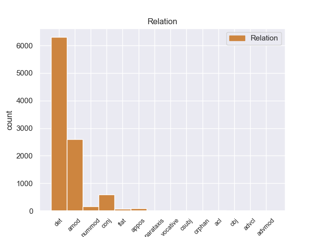
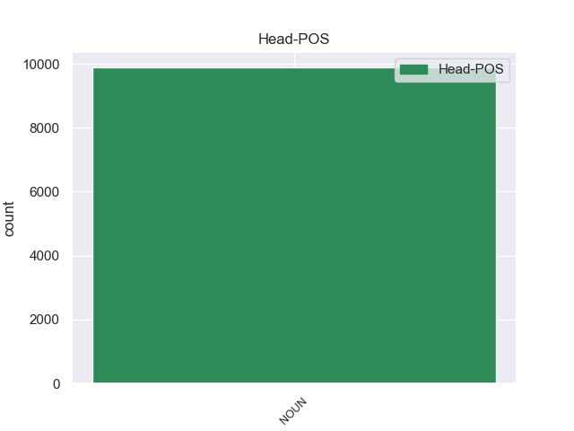
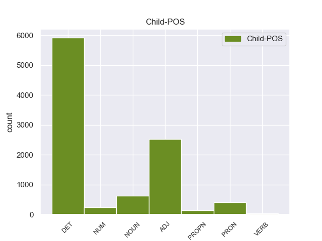

Distribution of features within this leaf



Morphosyntax Rules sorted by frequency.
- When the dependent token is the determiner(det) of the head token, and the head token is NOUN the Case needs to be Acc.
1 Αυτό _ _ _ _ 0 _ _ _
2 μπορεί _ _ _ _ 0 _ _ _
3 να _ _ _ _ 0 _ _ _
4 μην _ _ _ _ 0 _ _ _
5 οδηγήσει _ _ _ _ 0 _ _ _
6 σ _ _ _ _ 0 _ _ _
7 τη _ _ _ _ 0 _ _ _
8 λήξη _ _ _ _ 0 _ _ _
9 του _ _ _ _ 0 _ _ _
10 εν _ _ _ _ 0 _ _ _
11 λόγω _ _ _ _ 0 _ _ _
12 ζητήματος _ _ _ _ 0 _ _ _
13 αλλά _ _ _ _ 0 _ _ _
14 , _ _ _ _ 0 _ _ _
15 σ _ _ _ _ 0 _ _ _
16 τη _ _ _ _ 0 _ _ _
17 μορφή _ _ _ _ 0 _ _ _
18 υπό _ _ _ _ 0 _ _ _
19 την _ _ _ _ 0 _ _ _
20 οποία _ _ _ _ 0 _ _ _
21 την _ _ _ _ 0 _ _ _
22 λάβαμε _ _ _ _ 0 _ _ _
23 , _ _ _ _ 0 _ _ _
24 αυτή _ _ _ _ 0 _ _ _
25 η _ _ _ _ 0 _ _ _
26 αίτηση _ _ _ _ 0 _ _ _
27 άρσης _ _ _ _ 0 _ _ _
28 της _ _ _ _ 0 _ _ _
29 ασυλίας _ _ _ _ 0 _ _ _
30 ήταν _ _ _ _ 0 _ _ _
31 , _ _ _ _ 0 _ _ _
32 κατά _ _ _ _ 0 _ _ _
33 την _ _ _ _ 0 _ _ _
34 άποψη _ _ _ _ 0 _ _ _
35 της _ _ _ _ 0 _ _ _
36 Επιτροπής _ _ _ _ 0 _ _ _
37 Νομικών _ _ _ _ 0 _ _ _
38 Θεμάτων _ _ _ _ 0 _ _ _
39 , _ _ _ _ 0 _ _ _
40 απαράδεκτη _ _ _ _ 0 _ _ _
41 , _ _ _ _ 0 _ _ _
42 άποψη _ _ _ _ 0 _ _ _
43 την _ _ _ _ 0 _ _ _
44 οποία _ _ _ _ 0 _ _ _
45 συνιστώ _ _ _ _ 0 _ _ _
46 σ _ _ _ _ 0 _ _ _
47 το ο DET AtDf Case=Acc|Gender=Neut|Number=Sing 48 det _ _
48 Σώμα σώμα NOUN NOUN Case=Acc|Gender=Neut|Number=Sing 0 _ _ _
49 να _ _ _ _ 0 _ _ _
50 υιοθετήσει _ _ _ _ 0 _ _ _
51 . _ _ _ _ 0 _ _ _
1 Ευελπιστώ _ _ _ _ 0 _ _ _
2 ότι _ _ _ _ 0 _ _ _
3 η _ _ _ _ 0 _ _ _
4 απόφαση _ _ _ _ 0 _ _ _
5 αυτή _ _ _ _ 0 _ _ _
6 , _ _ _ _ 0 _ _ _
7 συμπεριλαμβανομένης _ _ _ _ 0 _ _ _
8 και _ _ _ _ 0 _ _ _
9 της _ _ _ _ 0 _ _ _
10 αιτιολογικής _ _ _ _ 0 _ _ _
11 έκθεσης _ _ _ _ 0 _ _ _
12 που _ _ _ _ 0 _ _ _
13 την _ _ _ _ 0 _ _ _
14 συνοδεύει _ _ _ _ 0 _ _ _
15 , _ _ _ _ 0 _ _ _
16 θα _ _ _ _ 0 _ _ _
17 διαβιβαστεί _ _ _ _ 0 _ _ _
18 σ _ _ _ _ 0 _ _ _
19 τις _ _ _ _ 0 _ _ _
20 γαλλικές γαλλικός ADJ ADJ Case=Acc|Gender=Fem|Number=Plur 21 amod _ _
21 αρχές αρχή NOUN NOUN Case=Acc|Gender=Fem|Number=Plur 0 _ _ _
22 , _ _ _ _ 0 _ _ _
23 εφόσον _ _ _ _ 0 _ _ _
24 υπερψηφιστεί _ _ _ _ 0 _ _ _
25 από _ _ _ _ 0 _ _ _
26 το _ _ _ _ 0 _ _ _
27 Κοινοβούλιο _ _ _ _ 0 _ _ _
28 . _ _ _ _ 0 _ _ _
1 από _ _ _ _ 0 _ _ _
2 τα _ _ _ _ 0 _ _ _
3 δε _ _ _ _ 0 _ _ _
4 έγγραφα _ _ _ _ 0 _ _ _
5 της _ _ _ _ 0 _ _ _
6 υπόθεσης _ _ _ _ 0 _ _ _
7 προκύπτει _ _ _ _ 0 _ _ _
8 ότι _ _ _ _ 0 _ _ _
9 δεν _ _ _ _ 0 _ _ _
10 φαίνεται _ _ _ _ 0 _ _ _
11 να _ _ _ _ 0 _ _ _
12 έχει _ _ _ _ 0 _ _ _
13 ληφθεί _ _ _ _ 0 _ _ _
14 υπόψη _ _ _ _ 0 _ _ _
15 η _ _ _ _ 0 _ _ _
16 σύσταση _ _ _ _ 0 _ _ _
17 να _ _ _ _ 0 _ _ _
18 διαβιβαστεί _ _ _ _ 0 _ _ _
19 η _ _ _ _ 0 _ _ _
20 αίτηση _ _ _ _ 0 _ _ _
21 άρσης _ _ _ _ 0 _ _ _
22 της _ _ _ _ 0 _ _ _
23 ασυλίας _ _ _ _ 0 _ _ _
24 μόνον _ _ _ _ 0 _ _ _
25 επί _ _ _ _ 0 _ _ _
26 τη _ _ _ _ 0 _ _ _
27 βάσει _ _ _ _ 0 _ _ _
28 ακριβέστερου _ _ _ _ 0 _ _ _
29 προσδιορισμού _ _ _ _ 0 _ _ _
30 όσον _ _ _ _ 0 _ _ _
31 αφορά _ _ _ _ 0 _ _ _
32 τους _ _ _ _ 0 _ _ _
33 τόπους τόπος NOUN NOUN Case=Acc|Gender=Masc|Number=Plur 0 _ _ _
34 και _ _ _ _ 0 _ _ _
35 τα _ _ _ _ 0 _ _ _
36 πρόσωπα πρόσωπο NOUN NOUN Case=Acc|Gender=Neut|Number=Plur 33 conj _ _
37 που _ _ _ _ 0 _ _ _
38 εμπλέκονται _ _ _ _ 0 _ _ _
39 σ _ _ _ _ 0 _ _ _
40 την _ _ _ _ 0 _ _ _
41 υπόθεση _ _ _ _ 0 _ _ _
42 . _ _ _ _ 0 _ _ _
1 Κύριε _ _ _ _ 0 _ _ _
2 Πρόεδρε _ _ _ _ 0 _ _ _
3 , _ _ _ _ 0 _ _ _
4 οι _ _ _ _ 0 _ _ _
5 υπό _ _ _ _ 0 _ _ _
6 συζήτηση _ _ _ _ 0 _ _ _
7 υποθέσεις _ _ _ _ 0 _ _ _
8 αφορούν _ _ _ _ 0 _ _ _
9 πολύ _ _ _ _ 0 _ _ _
10 σοβαρές _ _ _ _ 0 _ _ _
11 κατηγορίες _ _ _ _ 0 _ _ _
12 , _ _ _ _ 0 _ _ _
13 οι _ _ _ _ 0 _ _ _
14 οποίες _ _ _ _ 0 _ _ _
15 βαρύνουν _ _ _ _ 0 _ _ _
16 δύο δύο NUM NUM Case=Acc|Gender=Masc|Number=Plur|NumType=Card 17 nummod _ _
17 βουλευτές βουλευτής NOUN NOUN Case=Acc|Gender=Masc|Number=Plur 0 _ _ _
18 του _ _ _ _ 0 _ _ _
19 Σώματος _ _ _ _ 0 _ _ _
20 και _ _ _ _ 0 _ _ _
21 αναφέρονται _ _ _ _ 0 _ _ _
22 σ _ _ _ _ 0 _ _ _
23 την _ _ _ _ 0 _ _ _
24 πρώτη _ _ _ _ 0 _ _ _
25 σελίδα _ _ _ _ 0 _ _ _
26 της _ _ _ _ 0 _ _ _
27 αιτιολογικής _ _ _ _ 0 _ _ _
28 έκθεσης _ _ _ _ 0 _ _ _
29 της _ _ _ _ 0 _ _ _
30 έκθεσής _ _ _ _ 0 _ _ _
31 μου _ _ _ _ 0 _ _ _
32 , _ _ _ _ 0 _ _ _
33 σ _ _ _ _ 0 _ _ _
34 την _ _ _ _ 0 _ _ _
35 οποία _ _ _ _ 0 _ _ _
36 συνιστώ _ _ _ _ 0 _ _ _
37 σ _ _ _ _ 0 _ _ _
38 τους _ _ _ _ 0 _ _ _
39 συναδέλφους _ _ _ _ 0 _ _ _
40 να _ _ _ _ 0 _ _ _
41 ρίξουν _ _ _ _ 0 _ _ _
42 μια _ _ _ _ 0 _ _ _
43 ματιά _ _ _ _ 0 _ _ _
44 . _ _ _ _ 0 _ _ _
1 πρόκειται _ _ _ _ 0 _ _ _
2 για _ _ _ _ 0 _ _ _
3 αυτό _ _ _ _ 0 _ _ _
4 το _ _ _ _ 0 _ _ _
5 οποίο _ _ _ _ 0 _ _ _
6 αποκαλύφθηκε _ _ _ _ 0 _ _ _
7 κατά _ _ _ _ 0 _ _ _
8 τη _ _ _ _ 0 _ _ _
9 διάρκεια _ _ _ _ 0 _ _ _
10 αυτής _ _ _ _ 0 _ _ _
11 της _ _ _ _ 0 _ _ _
12 διαδικασίας _ _ _ _ 0 _ _ _
13 , _ _ _ _ 0 _ _ _
14 ότι _ _ _ _ 0 _ _ _
15 ο _ _ _ _ 0 _ _ _
16 Εισαγγελέας _ _ _ _ 0 _ _ _
17 κάποια _ _ _ _ 0 _ _ _
18 στιγμή _ _ _ _ 0 _ _ _
19 ζήτησε _ _ _ _ 0 _ _ _
20 από _ _ _ _ 0 _ _ _
21 την _ _ _ _ 0 _ _ _
22 Πρόεδρο πρόεδρος NOUN NOUN Case=Acc|Gender=Fem|Number=Sing 0 _ _ _
23 του _ _ _ _ 0 _ _ _
24 Σώματος _ _ _ _ 0 _ _ _
25 , _ _ _ _ 0 _ _ _
26 την _ _ _ _ 0 _ _ _
27 προκάτοχό προκάτοχος ADJ ADJ Case=Acc|Gender=Fem|Number=Sing 22 appos _ _
28 σας _ _ _ _ 0 _ _ _
29 , _ _ _ _ 0 _ _ _
30 λεπτομέρειες _ _ _ _ 0 _ _ _
31 για _ _ _ _ 0 _ _ _
32 την _ _ _ _ 0 _ _ _
33 ψήφο _ _ _ _ 0 _ _ _
34 που _ _ _ _ 0 _ _ _
35 έχουν _ _ _ _ 0 _ _ _
36 δώσει _ _ _ _ 0 _ _ _
37 οι _ _ _ _ 0 _ _ _
38 δύο _ _ _ _ 0 _ _ _
39 συγκεκριμένοι _ _ _ _ 0 _ _ _
40 βουλευτές _ _ _ _ 0 _ _ _
41 προκειμένου _ _ _ _ 0 _ _ _
42 να _ _ _ _ 0 _ _ _
43 διευκρινιστεί _ _ _ _ 0 _ _ _
44 περαιτέρω _ _ _ _ 0 _ _ _
45 η _ _ _ _ 0 _ _ _
46 πιθανότητα _ _ _ _ 0 _ _ _
47 να _ _ _ _ 0 _ _ _
48 είχαν _ _ _ _ 0 _ _ _
49 ασκήσει _ _ _ _ 0 _ _ _
50 αθέμιτη _ _ _ _ 0 _ _ _
51 επιρροή _ _ _ _ 0 _ _ _
52 . _ _ _ _ 0 _ _ _
1 Ο _ _ _ _ 0 _ _ _
2 θάνατος _ _ _ _ 0 _ _ _
3 του _ _ _ _ 0 _ _ _
4 βασιλιά _ _ _ _ 0 _ _ _
5 Αλέξανδρου _ _ _ _ 0 _ _ _
6 είχε _ _ _ _ 0 _ _ _
7 ως _ _ _ _ 0 _ _ _
8 συνέπεια _ _ _ _ 0 _ _ _
9 να _ _ _ _ 0 _ _ _
10 ανακηρύξει _ _ _ _ 0 _ _ _
11 αντιβασιλέα _ _ _ _ 0 _ _ _
12 η _ _ _ _ 0 _ _ _
13 Βουλή _ _ _ _ 0 _ _ _
14 τον _ _ _ _ 0 _ _ _
15 ναύαρχο ναύαρχος NOUN NOUN Case=Acc|Gender=Masc|Number=Sing 0 _ _ _
16 Παύλο _ _ _ _ 0 _ _ _
17 Κουντουριώτη Κουντουριώτης PROPN PROPN Case=Acc|Gender=Masc|Number=Sing 15 flat _ SpaceAfter=No
18 . _ _ _ _ 0 _ _ _
1 Τέθηκε _ _ _ _ 0 _ _ _
2 επικεφαλής _ _ _ _ 0 _ _ _
3 επανάστασης _ _ _ _ 0 _ _ _
4 ( _ _ _ _ 0 _ _ _
5 με _ _ _ _ 0 _ _ _
6 το _ _ _ _ 0 _ _ _
7 κίνημα _ _ _ _ 0 _ _ _
8 Εθνικής _ _ _ _ 0 _ _ _
9 Άμυνας _ _ _ _ 0 _ _ _
10 ) _ _ _ _ 0 _ _ _
11 με _ _ _ _ 0 _ _ _
12 έδρα έδρα NOUN NOUN Case=Acc|Gender=Fem|Number=Sing 0 _ _ _
13 τη _ _ _ _ 0 _ _ _
14 Θεσσαλονίκη Θεσσαλονίκη PROPN PROPN Case=Acc|Gender=Fem|Number=Sing 12 acl _ SpaceAfter=No
15 , _ _ _ _ 0 _ _ _
16 σ _ _ _ _ 0 _ _ _
17 την _ _ _ _ 0 _ _ _
18 οποία _ _ _ _ 0 _ _ _
19 πήγε _ _ _ _ 0 _ _ _
20 και _ _ _ _ 0 _ _ _
21 σχημάτισε _ _ _ _ 0 _ _ _
22 επαναστατική _ _ _ _ 0 _ _ _
23 " _ _ _ _ 0 _ _ _
24 Προσωρινή _ _ _ _ 0 _ _ _
25 Κυβέρνηση _ _ _ _ 0 _ _ _
26 Εθνικής _ _ _ _ 0 _ _ _
27 Άμυνας _ _ _ _ 0 _ _ _
28 " _ _ _ _ 0 _ _ _
29 μαζί _ _ _ _ 0 _ _ _
30 με _ _ _ _ 0 _ _ _
31 τους _ _ _ _ 0 _ _ _
32 ναύαρχο _ _ _ _ 0 _ _ _
33 Παύλο _ _ _ _ 0 _ _ _
34 Κουντουριώτη _ _ _ _ 0 _ _ _
35 και _ _ _ _ 0 _ _ _
36 στρατηγό _ _ _ _ 0 _ _ _
37 Παναγιώτη _ _ _ _ 0 _ _ _
38 Δαγκλή _ _ _ _ 0 _ _ _
39 χρησιμοποιώντας _ _ _ _ 0 _ _ _
40 την _ _ _ _ 0 _ _ _
41 Κρητική _ _ _ _ 0 _ _ _
42 Χωροφυλακή _ _ _ _ 0 _ _ _
43 αφού _ _ _ _ 0 _ _ _
44 προηγουμένως _ _ _ _ 0 _ _ _
45 , _ _ _ _ 0 _ _ _
46 σ _ _ _ _ 0 _ _ _
47 τις _ _ _ _ 0 _ _ _
48 25_Σεπτεμβρίου _ _ _ _ 0 _ _ _
49 , _ _ _ _ 0 _ _ _
50 πέρασε _ _ _ _ 0 _ _ _
51 από _ _ _ _ 0 _ _ _
52 την _ _ _ _ 0 _ _ _
53 Κρήτη _ _ _ _ 0 _ _ _
54 , _ _ _ _ 0 _ _ _
55 η _ _ _ _ 0 _ _ _
56 οποία _ _ _ _ 0 _ _ _
57 προσχώρησε _ _ _ _ 0 _ _ _
58 κι _ _ _ _ 0 _ _ _
59 αυτή _ _ _ _ 0 _ _ _
60 σ _ _ _ _ 0 _ _ _
61 την _ _ _ _ 0 _ _ _
62 επανάσταση _ _ _ _ 0 _ _ _
63 . _ _ _ _ 0 _ _ _
1 Η _ _ _ _ 0 _ _ _
2 Κέρκυρα _ _ _ _ 0 _ _ _
3 είναι _ _ _ _ 0 _ _ _
4 προσβάσιμη _ _ _ _ 0 _ _ _
5 με _ _ _ _ 0 _ _ _
6 ΚΤΕΛ _ _ _ _ 0 _ _ _
7 ως _ _ _ _ 0 _ _ _
8 την _ _ _ _ 0 _ _ _
9 Ηγουμενίτσα _ _ _ _ 0 _ _ _
10 και _ _ _ _ 0 _ _ _
11 την _ _ _ _ 0 _ _ _
12 Πάτρα _ _ _ _ 0 _ _ _
13 και _ _ _ _ 0 _ _ _
14 σ _ _ _ _ 0 _ _ _
15 τη _ _ _ _ 0 _ _ _
16 συνέχεια _ _ _ _ 0 _ _ _
17 με _ _ _ _ 0 _ _ _
18 πλοίο πλοίο NOUN NOUN Case=Acc|Gender=Neut|Number=Sing 0 _ _ _
19 ή _ _ _ _ 0 _ _ _
20 αεροπορικώς _ _ _ _ 0 _ _ _
21 από _ _ _ _ 0 _ _ _
22 Αθήνα Αθήνα PROPN PROPN Case=Acc|Gender=Fem|Number=Sing 18 orphan _ SpaceAfter=No
23 . _ _ _ _ 0 _ _ _
1 ΗΠΑ ΗΠΑ NOUN NOUN Abbr=Yes 0 _ _ _
2 : _ _ _ _ 0 _ _ _
3 Προκαταρκτική _ _ _ _ 0 _ _ _
4 συμφωνία συμφωνία NOUN NOUN Case=Acc|Gender=Fem|Number=Sing 1 parataxis _ _
5 για _ _ _ _ 0 _ _ _
6 το _ _ _ _ 0 _ _ _
7 δημοσιονομικό _ _ _ _ 0 _ _ _
8 γκρεμό _ _ _ _ 0 _ _ _
9 . _ _ _ _ 0 _ _ _
1 Σ _ _ _ _ 0 _ _ _
2 τις _ _ _ _ 0 _ _ _
3 μεγάλες _ _ _ _ 0 _ _ _
4 πόλεις _ _ _ _ 0 _ _ _
5 κύρια _ _ _ _ 0 _ _ _
6 αιτία αιτία NOUN NOUN Case=Nom|Gender=Fem|Number=Sing 0 _ _ _
7 είναι _ _ _ _ 0 _ _ _
8 η _ _ _ _ 0 _ _ _
9 απομόνωση _ _ _ _ 0 _ _ _
10 ενώ _ _ _ _ 0 _ _ _
11 σ _ _ _ _ 0 _ _ _
12 τις _ _ _ _ 0 _ _ _
13 μικρότερες μικρός ADJ ADJ Case=Acc|Degree=Cmp|Gender=Fem|Number=Plur 6 advcl _ _
14 είναι _ _ _ _ 0 _ _ _
15 οι _ _ _ _ 0 _ _ _
16 αυστηροί _ _ _ _ 0 _ _ _
17 κανόνες _ _ _ _ 0 _ _ _
18 » _ _ _ _ 0 _ _ _
19 . _ _ _ _ 0 _ _ _
1 Ως _ _ _ _ 0 _ _ _
2 εκ _ _ _ _ 0 _ _ _
3 τούτου _ _ _ _ 0 _ _ _
4 , _ _ _ _ 0 _ _ _
5 κατά _ _ _ _ 0 _ _ _
6 τη _ _ _ _ 0 _ _ _
7 διάρκεια _ _ _ _ 0 _ _ _
8 της _ _ _ _ 0 _ _ _
9 επίσκεψής _ _ _ _ 0 _ _ _
10 μου _ _ _ _ 0 _ _ _
11 πρότινος _ _ _ _ 0 _ _ _
12 σ _ _ _ _ 0 _ _ _
13 την _ _ _ _ 0 _ _ _
14 Τουρκία _ _ _ _ 0 _ _ _
15 υπογράμμισα _ _ _ _ 0 _ _ _
16 ότι _ _ _ _ 0 _ _ _
17 αναμένουμε _ _ _ _ 0 _ _ _
18 τη _ _ _ _ 0 _ _ _
19 λήψη _ _ _ _ 0 _ _ _
20 ευρύτερων _ _ _ _ 0 _ _ _
21 μέτρων μέτρο NOUN NOUN Case=Gen|Gender=Neut|Number=Plur 0 _ _ _
22 όσον _ _ _ _ 0 _ _ _
23 αφορά _ _ _ _ 0 _ _ _
24 την _ _ _ _ 0 _ _ _
25 ελευθερία ελευθερία NOUN NOUN Case=Acc|Gender=Fem|Number=Sing 21 obj _ _
26 του _ _ _ _ 0 _ _ _
27 συνασπίζεσθαι _ _ _ _ 0 _ _ _
28 , _ _ _ _ 0 _ _ _
29 τη _ _ _ _ 0 _ _ _
30 χρήση _ _ _ _ 0 _ _ _
31 γλωσσών _ _ _ _ 0 _ _ _
32 σ _ _ _ _ 0 _ _ _
33 τη _ _ _ _ 0 _ _ _
34 ραδιοφωνία _ _ _ _ 0 _ _ _
35 , _ _ _ _ 0 _ _ _
36 την _ _ _ _ 0 _ _ _
37 τηλεόραση _ _ _ _ 0 _ _ _
38 και _ _ _ _ 0 _ _ _
39 την _ _ _ _ 0 _ _ _
40 εκπαίδευση _ _ _ _ 0 _ _ _
41 , _ _ _ _ 0 _ _ _
42 την _ _ _ _ 0 _ _ _
43 κατάργηση _ _ _ _ 0 _ _ _
44 της _ _ _ _ 0 _ _ _
45 θανατικής _ _ _ _ 0 _ _ _
46 ποινής _ _ _ _ 0 _ _ _
47 καθώς _ _ _ _ 0 _ _ _
48 και _ _ _ _ 0 _ _ _
49 την _ _ _ _ 0 _ _ _
50 υιοθέτηση _ _ _ _ 0 _ _ _
51 των _ _ _ _ 0 _ _ _
52 αρχών _ _ _ _ 0 _ _ _
53 της _ _ _ _ 0 _ _ _
54 νομικής _ _ _ _ 0 _ _ _
55 προστασίας _ _ _ _ 0 _ _ _
56 αντίστοιχα _ _ _ _ 0 _ _ _
57 με _ _ _ _ 0 _ _ _
58 τη _ _ _ _ 0 _ _ _
59 νομολογία _ _ _ _ 0 _ _ _
60 του _ _ _ _ 0 _ _ _
61 Ευρωπαϊκού _ _ _ _ 0 _ _ _
62 Δικαστηρίου _ _ _ _ 0 _ _ _
63 για _ _ _ _ 0 _ _ _
64 τα _ _ _ _ 0 _ _ _
65 Ανθρώπινα _ _ _ _ 0 _ _ _
66 Δικαιώματα _ _ _ _ 0 _ _ _
67 . _ _ _ _ 0 _ _ _
1 Η _ _ _ _ 0 _ _ _
2 ίδια _ _ _ _ 0 _ _ _
3 δήλωσε _ _ _ _ 0 _ _ _
4 πως _ _ _ _ 0 _ _ _
5 " _ _ _ _ 0 _ _ _
6 σ _ _ _ _ 0 _ _ _
7 τις _ _ _ _ 0 _ _ _
8 30 _ _ _ _ 0 _ _ _
9 Απριλίου _ _ _ _ 0 _ _ _
10 γιορτάζουμε _ _ _ _ 0 _ _ _
11 τα _ _ _ _ 0 _ _ _
12 200 _ _ _ _ 0 _ _ _
13 χρόνια _ _ _ _ 0 _ _ _
14 από _ _ _ _ 0 _ _ _
15 την _ _ _ _ 0 _ _ _
16 εγκαθίδρυση _ _ _ _ 0 _ _ _
17 του _ _ _ _ 0 _ _ _
18 Βασιλείου _ _ _ _ 0 _ _ _
19 των _ _ _ _ 0 _ _ _
20 Κάτω κάτω ADJ ADJ Case=Acc|Gender=Fem|Number=Plur 21 advmod _ _
21 Χωρών χώρα NOUN NOUN Case=Gen|Gender=Fem|Number=Plur 0 _ _ _
22 , _ _ _ _ 0 _ _ _
23 ενώ _ _ _ _ 0 _ _ _
24 επίσης _ _ _ _ 0 _ _ _
25 κλείνω _ _ _ _ 0 _ _ _
26 τα _ _ _ _ 0 _ _ _
27 75 _ _ _ _ 0 _ _ _
28 χρόνια _ _ _ _ 0 _ _ _
29 . _ _ _ _ 0 _ _ _
non-conforming Examples:
1 Χθες _ _ _ _ 0 _ _ _
2 , _ _ _ _ 0 _ _ _
3 η _ _ _ _ 0 _ _ _
4 Μάντσεστερ _ _ _ _ 0 _ _ _
5 Γιουνάιτεντ _ _ _ _ 0 _ _ _
6 ηττήθηκε _ _ _ _ 0 _ _ _
7 με _ _ _ _ 0 _ _ _
8 σκορ _ _ _ _ 0 _ _ _
9 2:3 _ _ _ _ 0 _ _ _
10 από _ _ _ _ 0 _ _ _
11 την _ _ _ _ 0 _ _ _
12 Ατλέτικο _ _ _ _ 0 _ _ _
13 Μπιλμπάο _ _ _ _ 0 _ _ _
14 , _ _ _ _ 0 _ _ _
15 σ _ _ _ _ 0 _ _ _
16 τα _ _ _ _ 0 _ _ _
17 πλαίσια _ _ _ _ 0 _ _ _
18 της ο DET DET Case=Gen|Definite=Def|Gender=Fem|Number=Sing|PronType=Art 19 det _ _
19 φάσης φάση NOUN NOUN Case=Gen|Gender=Fem|Number=Sing 0 _ _ _
20 των _ _ _ _ 0 _ _ _
21 16 _ _ _ _ 0 _ _ _
22 του _ _ _ _ 0 _ _ _
23 Γιουρόπα _ _ _ _ 0 _ _ _
24 Λιγκ _ _ _ _ 0 _ _ _
25 2011-2012 _ _ _ _ 0 _ _ _
26 . _ _ _ _ 0 _ _ _
1 Το _ _ _ _ 0 _ _ _
2 σκορ _ _ _ _ 0 _ _ _
3 του ο DET DET Case=Gen|Definite=Def|Gender=Masc|Number=Sing|PronType=Art 4 det _ _
4 αγώνα αγώνας NOUN NOUN Case=Gen|Gender=Masc|Number=Sing 0 _ _ _
5 άνοιξε _ _ _ _ 0 _ _ _
6 ο _ _ _ _ 0 _ _ _
7 Γουέν _ _ _ _ 0 _ _ _
8 Ρούνι _ _ _ _ 0 _ _ _
9 σ _ _ _ _ 0 _ _ _
10 το _ _ _ _ 0 _ _ _
11 22ο _ _ _ _ 0 _ _ _
12 λεπτό _ _ _ _ 0 _ _ _
13 , _ _ _ _ 0 _ _ _
14 ωστόσο _ _ _ _ 0 _ _ _
15 οι _ _ _ _ 0 _ _ _
16 φιλοξενούμενοι _ _ _ _ 0 _ _ _
17 ισοφάρισαν _ _ _ _ 0 _ _ _
18 με _ _ _ _ 0 _ _ _
19 τον _ _ _ _ 0 _ _ _
20 Λλορέντε _ _ _ _ 0 _ _ _
21 σ _ _ _ _ 0 _ _ _
22 το _ _ _ _ 0 _ _ _
23 44' _ _ _ _ 0 _ _ _
24 . _ _ _ _ 0 _ _ _
1 Οι _ _ _ _ 0 _ _ _
2 δύο _ _ _ _ 0 _ _ _
3 αντίπαλοι _ _ _ _ 0 _ _ _
4 θα _ _ _ _ 0 _ _ _
5 ξανασυναντηθούν _ _ _ _ 0 _ _ _
6 σ _ _ _ _ 0 _ _ _
7 τις _ _ _ _ 0 _ _ _
8 15 _ _ _ _ 0 _ _ _
9 Μαρτίου _ _ _ _ 0 _ _ _
10 σ _ _ _ _ 0 _ _ _
11 το _ _ _ _ 0 _ _ _
12 Στάδιο _ _ _ _ 0 _ _ _
13 « _ _ _ _ 0 _ _ _
14 Σαν _ _ _ _ 0 _ _ _
15 Μαμές _ _ _ _ 0 _ _ _
16 » _ _ _ _ 0 _ _ _
17 , _ _ _ _ 0 _ _ _
18 με _ _ _ _ 0 _ _ _
19 τους _ _ _ _ 0 _ _ _
20 Ισπανούς _ _ _ _ 0 _ _ _
21 να _ _ _ _ 0 _ _ _
22 χρειάζονται _ _ _ _ 0 _ _ _
23 νίκη _ _ _ _ 0 _ _ _
24 και _ _ _ _ 0 _ _ _
25 ισοπαλία _ _ _ _ 0 _ _ _
26 και _ _ _ _ 0 _ _ _
27 με _ _ _ _ 0 _ _ _
28 τους _ _ _ _ 0 _ _ _
29 κόκκινους _ _ _ _ 0 _ _ _
30 διαβόλους _ _ _ _ 0 _ _ _
31 να _ _ _ _ 0 _ _ _
32 χρειάζονται _ _ _ _ 0 _ _ _
33 νίκη _ _ _ _ 0 _ _ _
34 με _ _ _ _ 0 _ _ _
35 διαφορά _ _ _ _ 0 _ _ _
36 δύο δύο NUM NUM Case=Gen|Gender=Neut|Number=Plur|NumType=Card 37 nummod _ _
37 τερμάτων τέρμα NOUN NOUN Case=Gen|Gender=Neut|Number=Plur 0 _ _ _
38 . _ _ _ _ 0 _ _ _
1 Ο ο DET DET Case=Nom|Definite=Def|Gender=Masc|Number=Sing|PronType=Art 2 det _ _
2 ποταμός ποταμός NOUN NOUN Case=Nom|Gender=Masc|Number=Sing 0 _ _ _
3 Αχέροντας _ _ _ _ 0 _ _ _
4 αποτελούσε _ _ _ _ 0 _ _ _
5 κατά _ _ _ _ 0 _ _ _
6 τη _ _ _ _ 0 _ _ _
7 μυθολογία _ _ _ _ 0 _ _ _
8 το _ _ _ _ 0 _ _ _
9 δρόμο _ _ _ _ 0 _ _ _
10 μέσω _ _ _ _ 0 _ _ _
11 του _ _ _ _ 0 _ _ _
12 οποίου _ _ _ _ 0 _ _ _
13 ο _ _ _ _ 0 _ _ _
14 Άδης _ _ _ _ 0 _ _ _
15 μετέφερε _ _ _ _ 0 _ _ _
16 τις _ _ _ _ 0 _ _ _
17 ψυχές _ _ _ _ 0 _ _ _
18 σ _ _ _ _ 0 _ _ _
19 το _ _ _ _ 0 _ _ _
20 βασίλειό _ _ _ _ 0 _ _ _
21 του _ _ _ _ 0 _ _ _
22 , _ _ _ _ 0 _ _ _
23 σ _ _ _ _ 0 _ _ _
24 τη _ _ _ _ 0 _ _ _
25 λίμνη _ _ _ _ 0 _ _ _
26 Αχερουσία _ _ _ _ 0 _ _ _
27 . _ _ _ _ 0 _ _ _
1 Ο _ _ _ _ 0 _ _ _
2 ποταμός ποταμός NOUN NOUN Case=Nom|Gender=Masc|Number=Sing 0 _ _ _
3 Αχέροντας Αχέροντας PROPN PROPN Case=Nom|Gender=Masc|Number=Sing 2 flat _ _
4 αποτελούσε _ _ _ _ 0 _ _ _
5 κατά _ _ _ _ 0 _ _ _
6 τη _ _ _ _ 0 _ _ _
7 μυθολογία _ _ _ _ 0 _ _ _
8 το _ _ _ _ 0 _ _ _
9 δρόμο _ _ _ _ 0 _ _ _
10 μέσω _ _ _ _ 0 _ _ _
11 του _ _ _ _ 0 _ _ _
12 οποίου _ _ _ _ 0 _ _ _
13 ο _ _ _ _ 0 _ _ _
14 Άδης _ _ _ _ 0 _ _ _
15 μετέφερε _ _ _ _ 0 _ _ _
16 τις _ _ _ _ 0 _ _ _
17 ψυχές _ _ _ _ 0 _ _ _
18 σ _ _ _ _ 0 _ _ _
19 το _ _ _ _ 0 _ _ _
20 βασίλειό _ _ _ _ 0 _ _ _
21 του _ _ _ _ 0 _ _ _
22 , _ _ _ _ 0 _ _ _
23 σ _ _ _ _ 0 _ _ _
24 τη _ _ _ _ 0 _ _ _
25 λίμνη _ _ _ _ 0 _ _ _
26 Αχερουσία _ _ _ _ 0 _ _ _
27 . _ _ _ _ 0 _ _ _